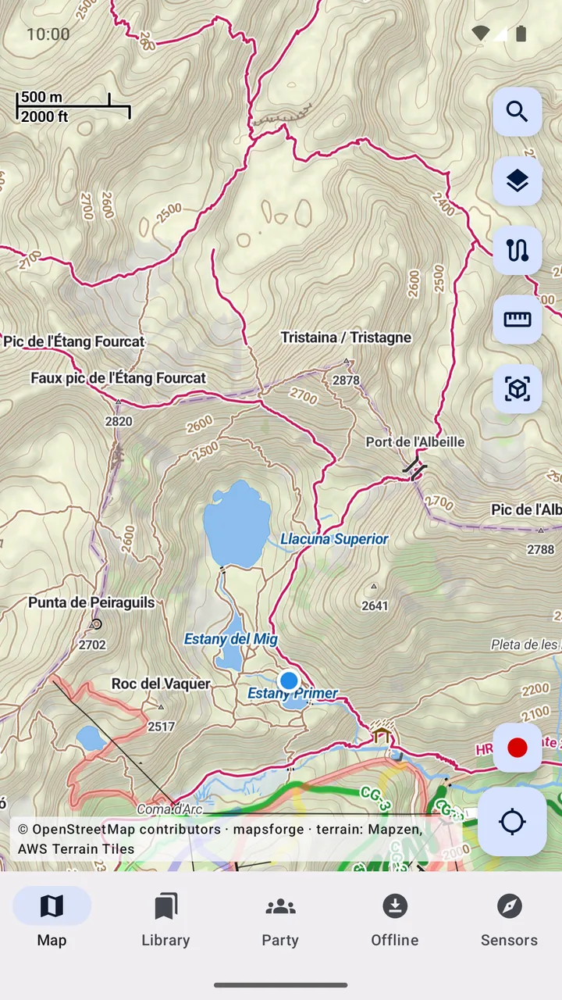
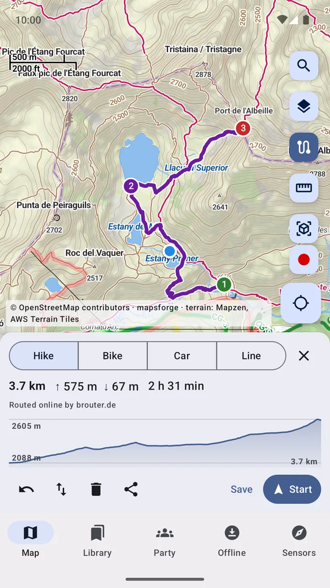
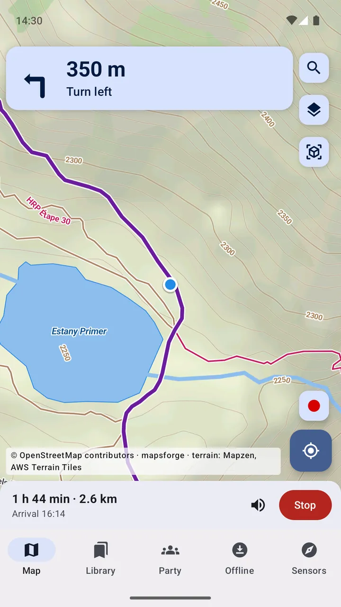
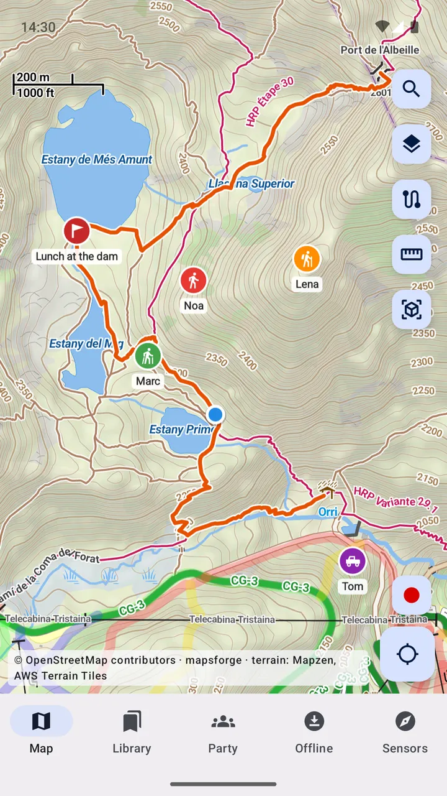
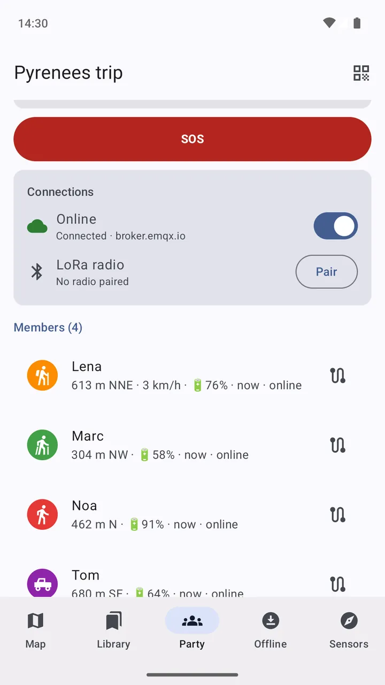
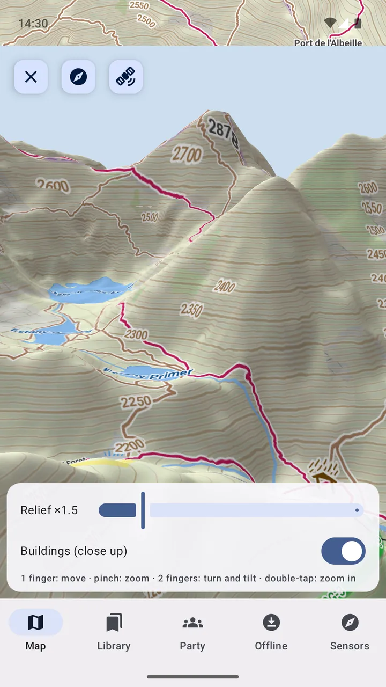
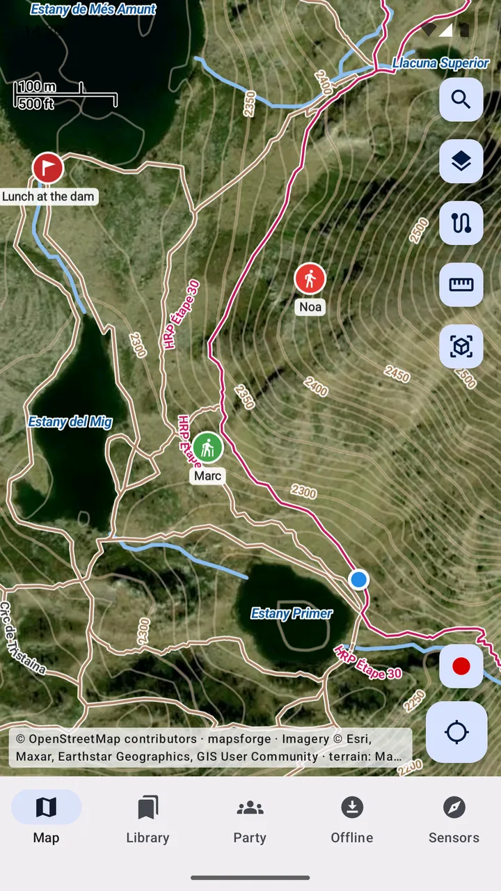
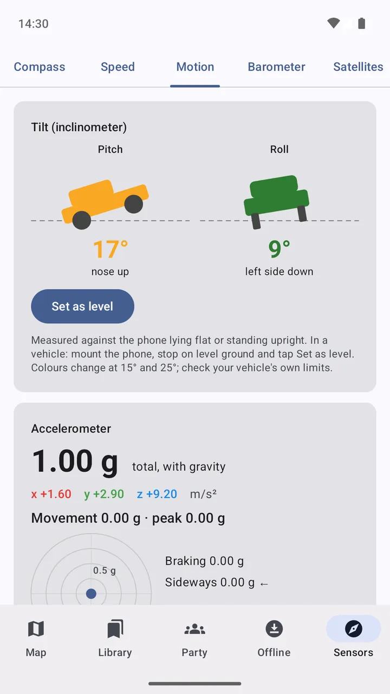

Maps that keep working where the signal stops.
Download the map of any country, plan a route and follow it turn by turn with no phone signal, and see where everyone in your group is, even beyond mobile coverage over LoRa radios.
- Works offline
- No account, ads or tracking
- Open source (GPL-3.0)



Plan the hike. Then just follow it.
Tap a few points and MapAround finds the way along paths and roads, on your phone when routing data is downloaded.
- Hike, bike and car profiles, or straight lines to measure
- Distance, climb, estimated time and an elevation profile
- Turn-by-turn guidance with voice prompts, also with the screen off
- A new route if you leave it, and Android Auto in the car


Know where everyone is, even off-grid.
Start a party and invite your group with a QR code. Everyone shows up on the map with their own icon and colour, online or through Meshtastic LoRa radios paired by Bluetooth.
- A phone with both internet and a radio passes messages between them
- SOS alerts, a meeting point and short messages
- End-to-end encrypted: only your party can read it


Read the terrain before you're in it.
Free OpenStreetMap maps of every country in a detailed topo style, with contour lines, hill shading and the marked hiking trails in their colours.
- 3D view with terrain relief and buildings
- Satellite imagery under the offline map's trails and labels
- National maps (swisstopo, IGN, Kartverket, USGS…) and your own tile servers
- Scanned topo sheets and tile databases: MBTiles, SQLiteDB, TwoNav .rmap

The instruments you'd otherwise carry.
Everything works from the phone's own sensors and the terrain data on it.
- Bearing and distance, line of sight and viewshed
- Radio link planner: Fresnel zone and path loss for LoRa, VHF, PMR446…
- Coordinates in DMS, UTM, MGRS, ITM, Plus Codes and Maidenhead
- Compass with true north, speedometer, barometer and GPS satellite view
- Inclinometer and G-meter for 4×4s
And the everyday things
Small features that matter on the trail.
Track recording
Record where you went with GPS, with the screen off, and see distance and climb.
Your places
Save camps, springs, viewpoints and parking with a note, and find them by distance.
GPX in and out
Import routes, tracks and waypoints from other apps, and export your own.
Offline search
Towns, peaks, springs, streets and paths from the downloaded maps, no internet needed.
Share a spot
Send any point or route as a link or GPX, and open links and coordinates others send you.
No Google services needed
MapAround doesn't depend on Google Play services, so it also runs on de-Googled phones.
Your trips stay yours.
Your maps, tracks and places stay on your phone. The developer runs no server and receives none of your data.
Read the privacy policy- No account
- No ads, no analytics, no tracking
- Party data end-to-end encrypted
- Open source under the GPL-3.0